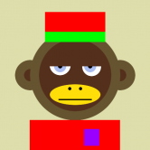
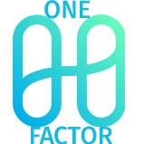
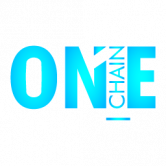
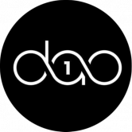
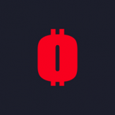
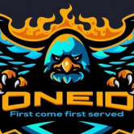
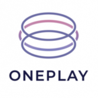
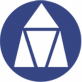

OmniDex 什么是 OmniDex ？ OmniDex 是一个自动化做市 (AMM) 去中心化交易所。在 Telos EVM 上构建的第一个原生 DEX 上交换、耕种并获得奖励！ Telos上的一站式DeFi：赚取利息，获得
Omnimorphs V2 什么是 Omnimorphs V2 ？ Omnimorphs 是一个生成式 NFT 收藏项目，包含 10.000 个独特的数字手绘头像，在以太坊区块链上永生。 Omnimorphs 生活在人类社会的边缘，没有参与，但足够接近观察。尽
OnChain Seasides 什么是 OnChain Seaside？ OnChain Seaside NFT 是一个生成式 NFT 项目，3333 完全链海动画待铸造。有超过 1.000.000.000 种不同的组合可供查找！加入我们的社区，我们每天都会举办
 OnChainMonkey 什么是 OnChainMonkey ？ 完全在具有所有这些属性的链 10k 集合上： 所有元数据都在链上，所有图像都在链上（svg 格式）全部在一个 txn 中创建； 所有 10,000 只 OnChain 猴子都是独一无
 ONE FACTOR ONE Factor是什么？ ONE Factor 是币安智能链上最好的 Yield Farm 项目，提供更赚钱的农场体验，加密因素是未来！ 作为投资者，您将享受稳定的被动收入和高年利率。
 Onechain 什么是ONECHAIN？ ONECHAIN 智能合约旨在为每个人提供 DeFi 支持基金，完全基于 TRON 区块链和智能合约技术。任何参与者都可以向社区基金贡献 TRX 并支持 ONECHAIN 社区成
 OneDAO Finance 什么是OneDAO Harmony？ OneDAO 是Harmony Network上第一个基于ODAO 代币的去中心化储备货币协议。每个ODAO 代币都由 OneDAO 库中
OneFifty 什么是 OneFifty ？ OneFifty 是 tron 的第一款双重风格游戏。合约中的每笔存款都会增加余额，直到它可以向第一个投资者支付 1.5 倍的存款。合约继续支付每个人存款的 1.5 倍，按
 OneFortune 什么是 OneFortune ？ 玩游戏。下注。获得奖励。OneFortune 是一个开创性的游戏赚钱区块链 GameFi 平台。OneFortune 建立在 Polygon 网络之上，让玩家能够获
 ONEID10 ONEID10是什么？ 一条线全球自动池系统🚀 Unstoppable One id 10 是一种革命性的独特 DAPP（去中心化应用程序）单线全球自动池协议，使用智能合约部署到以太
 OnePlay 什么是 OnePlay ？ Oneplay 旨在通过基于 EOSIO 的无需信任的区块链技术彻底改变在线赌博。这种创新技术允许完全透明，并以完全的用户隐私促进赌博公平。 ONE 代币将是原生平
OneRing 什么是 OneRing ？ OneRing 是该领域第一个多链交叉稳定币收益优化器。OneRing 的目标是消除 DeFi 2.0 的复杂性，让用户更轻松。通过这种方式，我们将能够为想要从他
 OneTimeUtility 什么是 OneTimeUtility ？ OTU（一次性实用程序）允许您在没有帐户的情况下接收 EMAIL。并且所有收到的 EMAIL 将在 1 小时后被删除。收到的 EMAIL 的键值存储在 OTU 区块链中
RoganFi Cronos Chain RoganFi 核心价值观上的高产农场和矿池是：创新和长期愿景，安全和社区驱动 Cronos 链上的高产农场和矿池 Cronos 是與 Crypto.org Chain 並行的 EVM 鏈。其主要目的是讓開發者可以快速
RoiCity ROICITY 是一个 ROI 项目，用户至少可以投资 100 TRX 并在 21 天内获得 135%m - 150% ROI + ROIC 代币，条件是合约余额有足够的资金用于提款。是什么让 RoiCity 与众不同？ RoiCity 是第一个也是唯
Ronin Bridge 在以太坊和 Ronin 网络之间转移您的资产。 Sky Mavis 的 Ronin 侧链钱包 Ronin 钱包是您前往新数字国家的登机牌。 此扩展允许用户玩在 Ronin 上运行的 Axie Infinity 和其他去中心化应用程序，
Rose Finance Rose.Finance为您带来最简单最快捷的BNB投资系统 从 7.8% 到 17% 的每日投资回报率 5 级推荐奖励 什么是罗森斯？ Rosefinance 是一个社交网络平台，可帮助建
RoseToken Rose 代币是一种去中心化和通缩的 BEP-20 代币，最大供应量为 10 亿。 Rose Token 旨在提供维持和增长投资资本所需的稳定质押奖励，作为安全的资金存储，Rose Token 还旨在
Rosetta Chain Rosetta Chain Dapp 允许用户在 Tron 区块链上编写（雕刻）私人和公共承诺。用户可以刻上他们的爱、决心、小指承诺、协议甚至想法。 Rosetta 链有助于记住、分享和保持每一刻。
RottenSwap Rotten Sushi 代币没有预先挖掘的开发基金，因此无法进行 Chef Nomi 类型的地毯拉动。 这些矿池旨在通过为 ROT 本身提供流动性来激励农业，而不是为鲸鱼创造一种低风险的方
Roulether Polygon (Matic) 网络上的分散式轮盘投注游戏。每卷都使用由 Chainlink VRF 提供支持的可证明公平且可验证的随机源 一种分散式投注轮盘游戏，它使用可证明公平且可验证的智能合
Rowing Finance Miner 什么是划船金融矿工？ Rowing Finance Miner 是一款非常有趣的 avax 代币矿工。这是一个非常简单但非常强大的智能合约，充当 AVAX 奖励池。 投资回报率：扣除所有采矿费用后，您
Royal Crypto 皇家加密货币 最智能的 BNB 投资系统。 每日投资回报率从 7.8% 到 17% 119 - 208% 回报 5 级推荐奖励 验证 BSC 智能合约 加密货币是一种数字形态的货币。他们属于数字资产，可
Royal Online Vegas (TRON) Royal Online Vegas（TRON）是运行在TRON区块链网络上的最佳用户体验游戏平台。它提供了各种令人兴奋和充满乐趣的游戏，开发了一个透明、安全和创
Royal Society of Players 这些手工制作的卡片由世界著名的扑克牌艺术家和设计师 Oban Jones 设计，代表多达 7 种不同的稀有特性（包括特别版金色、彩虹色、加密和其他独特设计，向我们的
RoyalCatsLotto 什么是皇家猫乐透？ Royal Cats Lotto 是一个基于区块链的在线彩票平台，使用智能合约进行每次转让和交易，以确保所有客户的安全和责任。 累积奖金等级：所有 4 张牌
RoyalPay DApp RoyalPay 是币安智能链上的一种自动质押和自动复利的去中心化协议，为投资者提供 480,810.4% 的年收益率。 该合约使用反倾销盾牌来保护您的投资和协议的可持续性。防止泵
Royalswap Royalswap 是第三代永续耕作机制，可提供可持续且可盈利的产量。 Royalswap DAPP技术分析 Royalswap dApp 是基于协议构建的 DeFi 类别的加密资产。现在，根据用户数量，它在一般 dApp 排
RSK Swap RSK 交换是适用于 RSK 网络的 Uniswap 协议的一个分支。它是用于自动提供流动性的完全去中心化协议。该站点不是 Uniswap 协议的官方站点。一个简单的形式化方程为成千上万
RTFKT Capsule Space Drip 1.2 RTFKT 在 2020 年 1 月 COVID 时代初期由三个朋友组成，诞生于元界，这已经定义了它的感觉。 RTFKT 是一个非常不拘一格、由创造者主导的组织。 RTFKT 使用最新的游戏引擎、NF
RTFKT SKIN VIAL: EVO X RTFKT SKIN VIAL：EVO X NFT 在过去 7 天内售出 117 次。 RTFKT SKIN VIAL: EVO X 的总销售额为 $90.13k。一个 RTFKT SKIN VIAL: EVO X NFT 的平均价格为 770.4 美元。共有 5,662 个 RTFKT SKIN VIAL: EVO X 拥
RTFKT x Nike Dunk Genesis CRYPTOKICKS RTFKT 与 Nike 携手推出首款 RTFKT x NIKE CRYPTOKICKS NFT：由 DRM OS 和 Skin Vial Tech 提供支持的 RTFKT X NIKE DUNK GENESIS CRYPTOKICKS 运动鞋。 请阅读：由于区块链在购买时处理更改的速度不够快，因此不要购买/
Rttip [公测] Rttip 是一个 ETH 打赏 dapps 来影响你的推文。您可以通过创建以 ETH 作为奖励的 RT 扩散请求或转发请求的推文来获得 ETH。需要事先登录 Rttip 才能接收 ETH。如


 网络上的分散式轮盘投注游戏。每卷都使用由 Chainlink VRF 提供支持的可证明公平且可验证的随机源.")